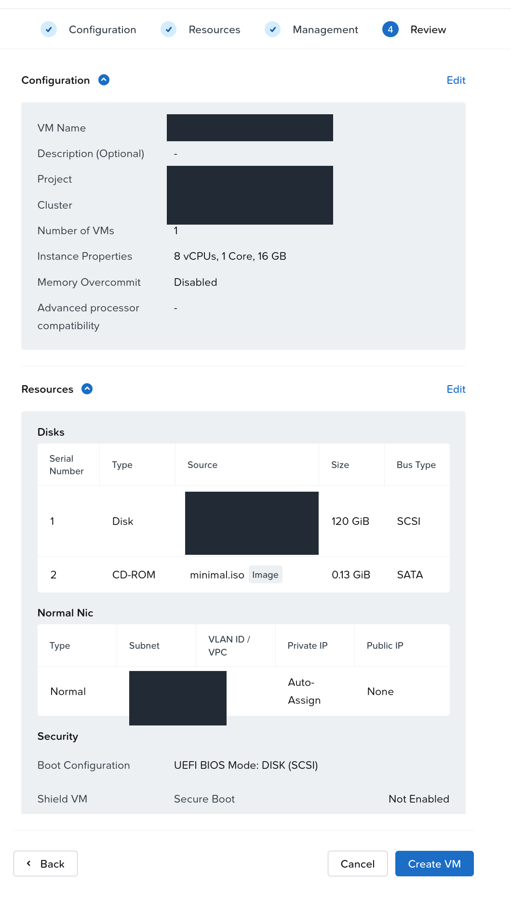

TC-012: Scale and Agent reuse
Partial
- Plan asks
- Scale 3→4→3→4 while preserving service availability, reclaiming and reusing the same VM/Agent.
- Implementation and result
- Manual captures show four Ready Nodes on scale-out, 15-second workload replica recovery on scale-in, 3,827 successful service probe samples with zero failures and a successful returned-worker canary.
- Limit
- Standard reclaim failed through proxy behavior tracked as MGMT-25581; reuse required a patched Agent image. A registry image republish was also needed.
Evidence: Manual: tc-012-scale19n1/ in evidence ZIP; Prism worker-3 screenshot.
